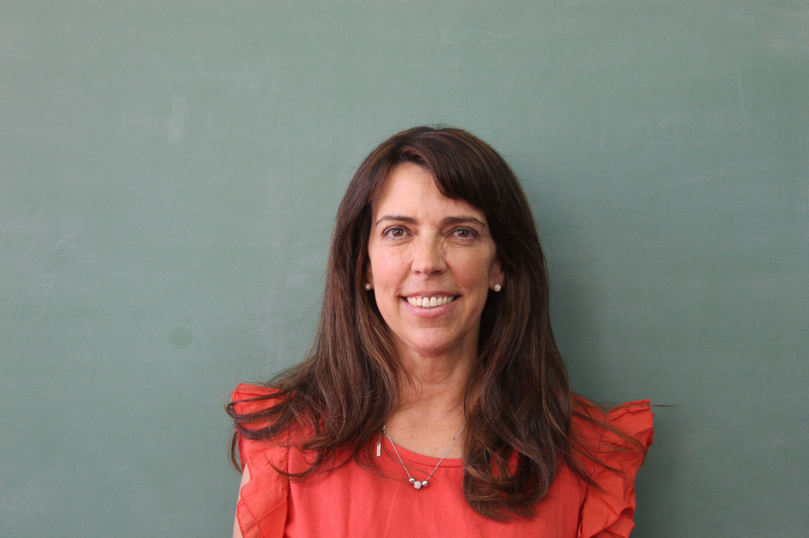
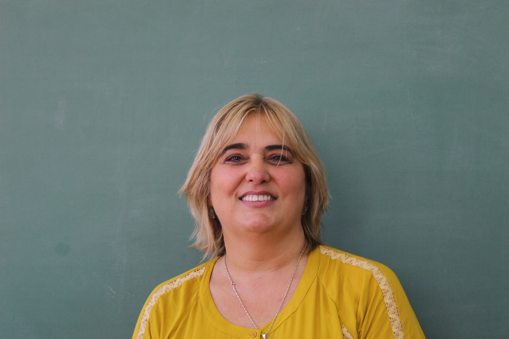
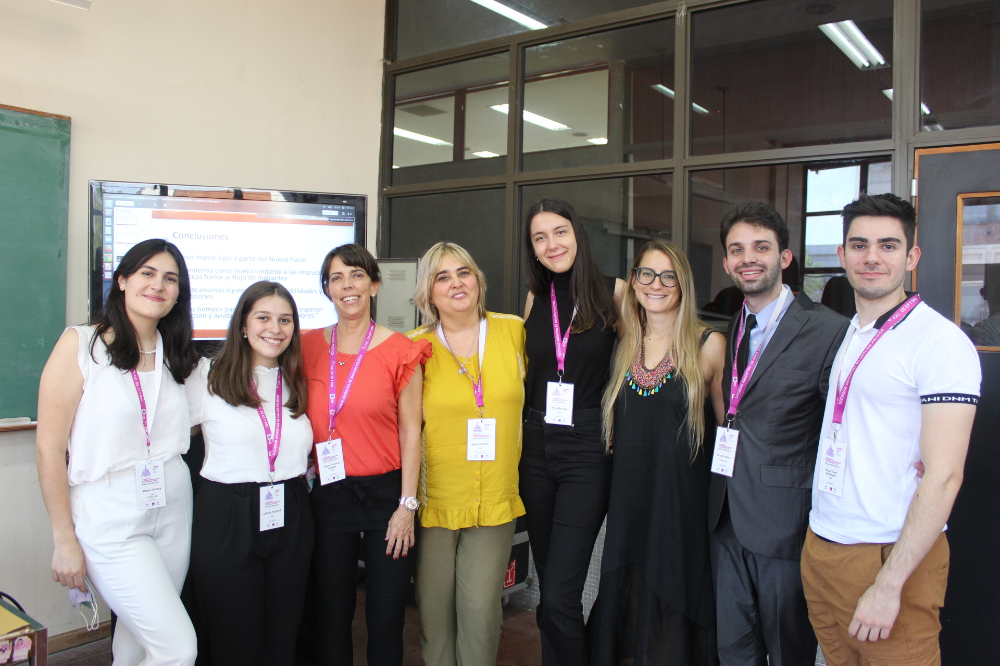

Grupo de Estudio de la Unión Europea
INTEGRANTES
En este apartado, les presentamos a los miembros de nuestro grupo de estudio, quienes desarollan nuestras actividades y realizan las investigaciones.
Miembros
Coordinadora

María Victoria Álvarez
Doctora en Relaciones Internacionales (UNR).
Mg en Integración y Cooperación Internacional
(UNR y Katholieke Universiteit de Leuven-Bélgica).
Docente de la carrera de Relaciones Internacionales
de la Facultad de Ciencia Política y RRII
y la Maestría en Integración y Cooperación (UNR)
Co-cordinadora

Marta Cabeza
Mg. en Integración y Cooperación Internacional (UNR).
Docente de las cátedras de “Comercio Exterior”
y “Metodología de la Investigación en Ciencias Sociales” de
la Lic. en RRII de la UNR.
Directora de la Revista Integración y Cooperación Internacional.
Estudiantes

Arena, Octavio; Berardo, Rocio; Gentiletti, Juan;
Naymark, Ludmila; Turraca, Aldana.
Estudiantes avanzados de la carrera
de Licenciatura en Relaciones Internacionales (UNR).
Encargados de gestionar las redes sociales del grupo.